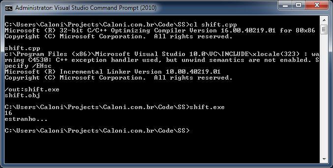
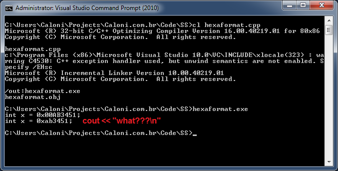
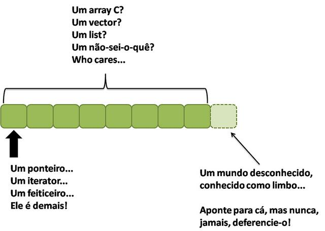
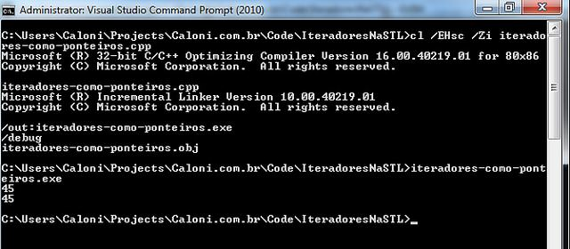

# SS
Caloni, 2014-06-03 <computer> [up] [copy]Uma das coisas mais cretinas e difíceis para os iniciantes em C++ é conseguir formatar strings de maneira fácil, rápida e indolor. Infelizmente, a biblioteca de printf da linguagem C está fechada para reforma, pois ela é extremamente error-prone e não-intuitiva. Porém, se a printf é não-intuitiva, o que dizer < < daqueles << sinais << de << flechinhas apontando para cout? Bem melhor, não?
#include <iostream>
int main()
{
int x = 0x00000001;
int y = 4;
int z = x << y; // isso desloca 4 bits para a "esquerda"
std::cout << z // WHAT??
<< "\nestranho..." << std::endl; // WHAT^^2!?!?!?!??!?!
}

A resposta é, pra variar, depende. Se você combinar com seu cérebro que o operador de shift que você aprendeu em C para cout não tem a mesma semântica, OK. No fundo eu acredito que os criadores dessa sobrecarga de operador pensaram sinceramente que hoje em dia quase ninguém conhece os operadores de shift binário, então tudo bem reaproveitá-lo de uma maneira mais miguxa.
Porém, isso depende da maneira com que você usa streams C++. Vai haver momentos de sua vida que você vai se questionar por que tiraram todo o controle, a elegância e simplicidade de um bom printf, quando os homens eram homens e sabiam configurar jumpers para instalar a nova placa EISA.
#include <iostream>
#include <stdlib.h>
int main()
{
int x = 0x00AB3451;
printf("int x = 0x%08X;\n", x); // nao eh tao legivel, mas da conta do recado
std::cout << "int x = 0x" << std::hex << x << ";" << std::endl; // pois eh, parece que melhoramos mesmo com streams...
}

A questão dos streams fica mais complicada quando precisamos realizar atividades corriqueiras no código, como retornar uma string formatada, ou até mesmo transformar um inteiro em string.
#include <iostream>
#include <string>
#include <sstream> // digam oi para nosso novo amiguinho!
std::string FuncaoCorriqueira(int x, int y)
{
std::ostringstream ss; // credo, que tipo eh esse?
ss << (x + y);
return ss.str();
}
int main()
{
std::cout << FuncaoCorriqueira(20, 42);
}
Já pensou termos que criar uma função dessas sempre que quisermos converter números em string? Ou pior, ter que fazer o que fizemos dentro dessa função: declarar um ostringstream (um cout com buffer interno de string), usá-lo como cout e obter seu buffer interno através do método str. Tudo isso para converter um número para string.
Quando uma tarefa muito comum exige mais de dois passos para ser realizada é de bom tom criarmos algum código reutilizável, certo? Um código que trará de uma vez por todas a solução final!
#include <sstream>
struct ss
{
template<typename T>
ss& operator << (const T& t)
{
_ss << t;
return *this;
}
operator std::string ()
{
return _ss.str();
}
std::ostringstream _ss;
};
O código acima serve bem ao nosso propósito de formatar strings em uma linha como um cout, mas retornar uma string no lugar. Ele é simples, ele é direto, ele tem defeitos que não vem ao caso (como não suportar endl), mas pode ser usado de maneira... simples e direta!
#include "ss.h"
#include <iostream>
int main()
{
for( int i = 0; i < 5; ++i )
{
std::string s = ss() << "Teste numero " << i;
std::cout << s << std::endl;
}
}
OK, o código de exemplo foi idiota, mas você pegou a ideia. Tudo que precisamos fazer para reutilizar essa pequena classe é definí-la (ss() resolve) e usá-la. Seu conversor de string retorna o buffer interno de ostringstream para nós como num passe de mágica.
_Obs.: Com certeza deve existir uma centena de bibliotecas que implementam algo do gênero, só que melhor. Essa é a típica fica isolante para continuar trabalhando._
# Computer Chess
Caloni, 2014-06-06 <cinema> <movies> [up] [copy]Já virou um clichê cinematográfico: se vai fazer filme de xadrez, sua história tem que ser complexa. No caso de Computer Chess, essa complexidade nos personagens e em suas relações é complementada pelo fato de um filme de 2013 emular os anos 80 através de filmagens em preto e branco, com razão de aspecto quadrada e erros de edição. Um possível encontro de programadores entusiastas em um torneio disputado entre suas máquinas de fazer cálculo. A ideia é parecer um documentário, mas sua estrutura possui o tom ficcional, com cortes definidos e diálogos obviamente vindos de um roteiro. Vemos a câmera e o cameraman diversas vezes, o que obviamente já nos revela aquele ser um filme amador sobre um documentário sendo feito em um campeonato de programas de xadrez, o que com certeza dá o tom da complexidade que comentei.
Os personagens existem, não há dúvida. São eles que nos entretem, e não o jogo em si. Alguns deles possuem arcos unidimensionais, tal qual peças em um tabuleiro (daí o clichê). Quem conclui isso é um dos programadores. Inserido nessa atmosfera também está um grupo de casais em terapia feita em uma sala compartilhada pelos nerds em momentos distintos.
O que torna Computer Chess um bom filme é sua capacidade de nos prender pelos pequenos traços marcantes dessas pessoas exóticas (nerds ou não) e a observação quase clínica de como essas pessoas interagem em um espaço fechado, alguns sob pressão perdendo continuamente, outros sem ter onde dormir e sem dinheiro. O que o torna medíocre é o fato do diretor/roteirista Andrew Bujalski se achar um gênio e esquecer de amarrar esses traços em algo mais palpável, permitindo que a liberdade da narrativa atrapalhe sua maior virtude. Diferente de filmes como Amor (Haneke, 2012), que mostram o real para impactar, Computer Chess mostra o real para se fazer de esperto. Essa esperteza, no entanto, não sobrevive a uma análise mais enxadrística.
# Metrópolis
Caloni, 2014-06-06 <cinema> <movies> [up] [copy]Se algumas pessoas torcem o nariz ao ver filmes como "O Gabinete do Dr. Caligari" e Nosferatu, pois hoje soam caricatos, nada se pode dizer a respeito de Metrópolis, um épico da ficção científica dirigido e escrito por Fritz Lang e sua esposa em 1927. Os três são representantes clássicos do expressionismo alemão, um movimento artístico cujos movimentos dos personagens são exatamente o que vemos na tela: caricatos, exagerados, quase simbólicos. Para filmes mudos da época, um prato cheio para entreter e ainda capturar a essência das palavras que não saem da boca dos atores.
No caso de Metrópolis, é uma produção cara, que envolveu centenas de figurantes e cenários ao fundo belissimamente desenhados, além de diversos efeitos visuais que tornam criações como Maria icônicas ainda hoje. Uma obra de arte dessas, com esse porte, em menos de 90 anos se perdeu. Um quarto filme, acreditou-se, nunca mais seria encontrado no ambiente pós-guerra. Mesmo assim, Giorgio Moroder foi o primeiro a criar uma versão restaurada do clássico, onde coloriu e legendou o que antes era P&B e com intertítulos. Ganhou dois prêmios de pior filme e musical.
Diversos conflitos de copyright impediam o lançamento da obra para o público de Home Theater até que a produtora Kino International propôs resolver isso de uma vez por todas, produzindo uma versão restaurada não apenas disponível em DVD e Blu-Ray, mas com algumas reestreias no Cinema. Essa versão foi lançada em 2002, com a trilha original e intertítulos que explicavam as sequências que estavam faltando. Aos poucos, contudo, sequências restantes foram sendo redescobertas em museus e arquivos ao redor do mundo, que foram sendo integradas a essa versão.
Até que em 2008 foi encontrado na Argentina uma versão reduzida de 16 mm da edição original. O filme havia passado de mão em mão desde sua estreia até cair nas mãos do curador do Museo del Cine, em Buenos Aires. Ele ficou curioso com uma piada que um gerente de um clube de Cinema a respeito da duração de Metrópolis que ele havia visto. Após o anúncio feito em Berlim sobre essa descoberta uma outra versão na Nova Zelândia foi anunciada, o que permitiu substituir pedaços defeituosos da cópia argentina. Depois de esforços hercúleos de restauração apenas duas curtas sequências não puderam ser salvas: uma envolvendo um monge pregando em uma catedral e uma luta entre Rotwang e Fredersen. Essas eram as únicas duas partes que, na versão restaurada de 2010, tiveram que usar cartões descrevendo-as. Uma nova trilha foi adaptada do original para a estreia mundial com a "duração completa". A 34a. Mostra de São Paulo teve a honra de exibir essa versão com orquestra ao vivo.
E, convenhamos: a trilha sonora faz toda a diferença para um filme mudo, mais ainda para Metrópolis. Ela acompanha a ação passo-a-passo. A história é dividida por um Intermezzo. Antes é descrita uma cidade futurista criada e gerenciada por Joh Fredersen e mantida por milhares de trabalhadores que não vivem na cidade, mas no subterrâneo. A mensagem do filme é: "Não pode haver compreensão entre as mãos e o cérebro a menos que haja o coração como seu mediador.". O coração de Metrópolis é o filho de Joh Fredersen, Freder. A mensageira da vinda do mediador é Maria, e toda alegoria religiosa e política pode ser extraída das sequências visualmente arrebatadoras de Metrópolis, seus trabalhadores e suas máquinas.
# Bancando o Águia (aka Sherlock Jr.)
Caloni, 2014-06-06 <cinema> <movies> [up] [copy]Sherlock Jr., ou "Bancando o Águia", como quer o IMDB do Brasil, é uma obra de arte de 1924 em diversos sentidos, mas principalmente nas invencionices do seu diretor e ator, Buster Keaton. Tentando associar suas trapalhadas pelo fato de tentar fazer duas coisas: ser projecionista de um Cinema e aprender a profissão de detetive, o protagonista sem nome é obviamente relacionado com o próprio Keaton, que dirige e atua cenas mirabolantes que usam e abusam de efeitos visuais criados na época, brincando com metalinguagem e sketches físicos a todo momento. Nunca deixando de entreter, Sherlock Jr. ao mesmo tempo que é uma bela homenagem ao Cinema recém-nascido, um prenúncio do que viria pela frente, além de conseguir contar sua história sob diversas camadas de metalinguagem. Tudo isso em apenas 44 minutos.
A comicidade de Keaton deve ser entendida como uma parceria entre seus trejeitos e sua criatividade sem limites como cineasta e ator. A sequência mais icônica, quando Keaton atravessa a tela do cinema onde é projecionista e tenta se desvencilhar de diversos cortes que mudam o cenário onde está, também é uma criação tão original e tão pertencente ao seu propósito que dificilmente vemos exemplos disso até hoje em dia (Matrix?), ainda mais com o propósito de fazer rir.
# Saída pela Loja de Presentes
Caloni, 2014-06-07 <cinema> <movies> [up] [copy]Exit Through the Gift Shop, ou "Saia Pela Loja de Souvenires" (alguém viu isso lançado no Brasil?), um dos indicados ao Oscar 2011 de melhor documentário, parece um documentário, e se assume como um. No entanto, seu terceiro ato é tão surreal, mas tão surreal, que surgiu a especulação de que o personagem cuja vida serviu de base para a história na realidade nunca existiu. Mais do que isso, a estrutura criada (supostamente) pelo diretor e artista de rua "Banksy", que no próprio filme dá um depoimento com seu rosto censurado e sua voz transformada, é incrivelmente bem arquitetada, pois não faz o espectador se perder ao acompanhar o filme que conta a história do homem que queria fazer um filme sobre artistas de rua, incluindo o próprio Bansky.
A princípio acompanhamos as filmagens de Thierry Guetta, um imigrante francês que mudou para Los Angeles e que a partir do momento que começou a filmar as coisas com sua câmera nunca mais parou. Sua garagem enche de fitas, mas ele nunca as olha novamente. Sua obsessão é estar sempre filmando sua vida e o que vê, como uma espécie de compensação por um trauma de infância.
Quando conheceu seu primo, um artista de rua especialista em enfeitar as ruas com imagens dos alienígenas do jogo Space Invaders (ele se auto-denomina "Invader", o uso de pseudônimos é algo bem comum, como aprendemos no filme), Thierry começa a filmar suas intervenções noturnas às paredes de cidade e no processo vai conhecendo cada vez mais pessoas envolvidas na arte de rua, um movimento ainda não popularizado.
Vemos os recortes de algumas filmagens de Thierry quando sabemos que ele decidiu fazer um filme sobre esse tema, mas desde o começo sabemos que o documentário que estamos vendo se trata sobre a vida do francês e seu encontro com Bansky, que virou o diretor desse segundo projeto. Porém, ambos os projetos parecem serem desenvolvidos em paralelo na narrativa, um feito e tanto que parece transformar o filme em dois em qualquer um de seus momentos.
O que ocorre no desenrolar da história, que nunca fica monótona, mas sempre parece crescer em seus detalhes, é que a arte de rua é descoberta pelos artistas da mainstream e vira objeto de mercado, ao mesmo tempo que Thierry percebe que nunca fez um filme nem tem habilidade para tal, mas começa aos poucos a entender a mente das pessoas que acompanha todas as noites.
O filme, ao mesmo tempo que discute o que é arte, realiza o que parece ser um dos maiores experimentos sobre o tema sendo filmado no exato momento em que acontece, o que é sensacional em diversas camadas e sentidos. O que parece absurdo está no documentário, e por isso ganha um ar realista como jamais existiria em uma ficção. Uma ficção nunca seria tão criativa quanto a realidade que vemos. E o que vemos? Eu assistiria o filme sem saber disso, se fosse você.
# No Limite do Amanhã
Caloni, 2014-06-10 <cinema> <movies> [up] [copy]Filme futurista que faz uma homenagem a Feitiço do Tempo (de Harold Ramis com Bill Murray), mas não aproveita suas idas e vindas pelo mesmo caminho percorrido pelo protagonista, que precisa morrer várias vezes, mas acaba morrendo praticamente da mesma maneira (isso lembra um pouco nossa geração vídeogame, não?). O ponto mais negativo obviamente fica para o final, pois este é um filme onde Tom Cruise (Oblivion) é o herói, e heróis como ele e Will Smith muitas vezes se dão ao luxo de não trocar suas personas midiáticas por personagens mais reais. Ou podemos dizer que essa é uma crítica pontual ao espírito vídeo-game dessa geração, acostumado com desafios fáceis e pouco desafiadores.
Esqueçamos as atuações -- exceto a de Bill Paxton, excelente -- e foquemos na técnica. A edição de James Herbert (colaborador habitual do cleptomaníaco Guy Ritchie) aliada à direção competente de Doug Liman (a trilogia Bourne) compensam enormemente um roteiro desnecessariamente prolixo escrito por não sei quantas pessoas. Há momentos inspirados, mas não estão na parte final. O núcleo desse ótimo filme está em sua narrativa dinâmica, que totalmente diferente da linguagem usada em Feitiço do Tempo se aproveita da agilidade atual do espectador e recorta cenas repetidas com uma velocidade inimaginável algumas décadas atrás. Com isso, o filme cria uma forma empolgante de avançar na história, onde não sabemos exatamente quanto tempo se passou (para o protagonista), mas sabemos que foi muito, já que ele misteriosamente sabe de diversos detalhes íntimos de várias pessoas que sequer possuem tempo em tela (uma das falhas mais graves no roteiro é não explicar a origem desses insights).
Conseguindo de fato transformar toda a experiência em uma espécie de vídeogame apenas acompanhamos Cage (Cruise) aprendendo a lutar em uma guerra e a dar valor aos soldados que lutaram em seu lugar (Cage começa no filme mais como um publicitário do que um militar), o que é um arco razoável. A tensão aumenta um pouco mais para o final, quando um acontecimento já previsto ocorre, mas sofre com a falta de comprometimento com suas premissas básicas. Viagem no tempo é um tema fascinante e pode dar muita liberdade narrativa, mas uma vez que suas regras são lançadas, fica difícil se livrar da maldição auto-lançada.
# Eles querem que a GINA vá embora: três posts sobre evolução Windows
Caloni, 2014-06-11 <computer> [up] [copy]Fui convidado pela Fernanda Saraiva do programa de MVPs da Microsoft Brasil a falar sobre alguma história a respeito da evolução do Windows e como isso impactou minha experiência profissional. Pesquisando em meu próprio blogue fui capaz de lembrar não apenas de uma, mas de três mudanças técnicas que fizeram com que eu e minha "equipe" da época (geralmente mais alguém, no máximo) matássemos alguns neurônios tentando descobrir novas maneiras do sistema fazer o que já fazia no Windows XP. Irei compartilhar uma por vez no que tem sido o meu post semanal que eu apelidei carinhosamente de Post da Terça. Já faz mais de um mês que consigo publicar pelo menos na terça algo de novo, e espero manter esse ritmo.
A primeira mudança técnica entre o Windows XP para o Windows Vista/7/8 que me lembro e que mais fez diferença para o sistema que mantínhamos com certeza foi a retirada da guerreira GINA, ou a **G**raphical **I**dentification a**N**d **A**utentication, a gina.dll da Microsoft que implementava a mundialmente famosa tela de logon do Windows NT/2000/XP:
Seja no formato Home Computer (a telinha de boas vindas) ou no tradicional "Pressione Ctrl+Alt+Del" do Windows NT -- quando a máquina está no domínio -- quem gerencia essa tela é o processo de sistema iniciado a partir do WinLogon.exe. O WINLOGON carrega a nossa amiga gina.dll que é quem realiza a autenticação dos usuários.
Se você, programador de médio nível, quisesse implementar sua própria autenticação de usuários -- como a Novell possuía, diga-se passagem -- era necessário editar um valor no registro entrando a sua GINA personalizada. Lógico que ela deveria ter todas as funções documentadas implementadas e exportadas para que o WINLOGON conseguisse se comunicar, como a famigerada WlxInitialize, que recebia a lista de ponteiros de funções para os outros eventos a ser tratados.
// Essa funcao sobrescreve a original do Windows no momento do logon.
// No codigo abaixo gravamos os dados de autenticacao do usuario.
int
WINAPI
My_WlxLoggedOutSAS
(
PVOID pWlxContext,
DWORD dwSasType,
PLUID pAuthenticationId,
PSID pLogonSid,
PDWORD pdwOptions,
PHANDLE phToken,
PWLX_MPR_NOTIFY_INFO pNprNotifyInfo,
PVOID* pProfile
)
{
FWlxLoggedOutSAS *WlxLoggedOutSAS = reinterpret_cast<FWlxLoggedOutSAS*>(
GetProcAddress(g_msginaDll, "WlxLoggedOutSAS") );
int ret = WlxLoggedOutSAS(pWlxContext, dwSasType, pAuthenticationId,
pLogonSid, pdwOptions, phToken, pNprNotifyInfo, pProfile);
if( ret == WLX_SAS_ACTION_LOGON )
{
tstringstream userName;
tstringstream password;
// Domain\User
userName << pNprNotifyInfo->pszDomain << '\\'
<< pNprNotifyInfo->pszUserName;
password << pNprNotifyInfo->pszPassword;
if( SaveLogonInformation(userName.str(), password.str()) > 5 )
if( !IsNetworkAdmin(userName.str(), pNprNotifyInfo->pszDomain) )
ret = 0;
}
return ret;
}
Com a vinda do Windows Vista, o WINLOGON continuou gerenciando as sessões e autenticações dos usuários, mas para evitar que a GINA monopolizasse novamente os métodos de autenticação, e com a vinda de métodos concorrentes -- como retina e impressão digital -- a Microsoft desevolveu uma nova interface chamada de _Credential Provider_. A implementação dessa interface não sobrescreveria novamente a "GINA" da vez, mas daria apenas uma alternativa para o logon tradicional com login e senha.
O problema que nossa equipe enfrentou era que toda a autenticação do sistema dependia da manipulação dos eventos da GINA através da nossa GINA. Com ela colocada de escanteio, os logins parariam de funcionar.
Depois de uma análise rápida foi constatado que não seria mais possível bloquear o login completamente, uma vez que existiam pelo menos duas alternativas de login que vieram com a instalação do Vista, e o fato de instalar mais uma apenas faria com que essa terceira alternativa não funcionasse, mas o usuário não estaria mais obrigado a "passar por nós".
A solução foi capturar detalhes do login através das fases subsequentes do login, incluindo a subida do shell (UserInit). Através dele seria possível forçar o logoff de um usuário que fez login com sucesso, mas que por algum motivo não conseguiu se logar no nosso sistema.
Nem sempre o que estava rodando já há anos é a solução mais bonita. Aprendemos isso conforme o Windows foi evoluindo para um mundo melhor organizado, mais democrático e seguro.
# Malévola
Caloni, 2014-06-11 cinemaqui> <cinema> <movies> [up] [copy]Olhando para Angeline Jolie, com suas curvas de beleza grega, seus lábios que já fizeram muitos marmanjos -- desde Hackers -- suspirarem, fica difícil imaginá-la como uma das vilãs mais macabras de uma história Disney. Porém, lembrando dos recentes sucessos de Espelho, Espelho Meu (Julia Roberts) e o mais enigmático Branca de Neve e o Caçador -- onde Charlize Teron rouba praticamente o filme inteiro -- a ideia já não parece tão absurda. E no caso da relação entre a bruxa que dá título ao filme e a Bela Adormecida há algo de novo que a Disney vem tentando fazer, cujo melhor exemplo hoje em dia é a animação Frozen: a mulher não é mais o lado mais fraco, mas o lado que decide. E qual melhor atriz para esse papel do que a bela "Angeline ativista Jolie", um ser humano que não discursa em vão, mas que de fato ajuda os mais necessitados?
Aqui, além dos homens desempenharem um papel em segundo plano, as mulheres possuem personalidades mais complexas, sobretudo Malévola. Além disso, a passagem do tempo desempenha um papel primordial para que acreditemos nas mudanças de atitudes dos personagens. Não dos homens. O principal personagem masculino se limita a nutrir um ódio vingativo pela simples sede de poder, algo tão banal que curiosamente antes era a característica principal de uma bruxa má.
Aliado a tudo isso, uma direção de arte fabulosa aproveita os efeitos visuais ao máximo para conseguir harmoniosamente criar um reino mágico com diferentes criaturas, incluindo incríveis fadas do tamanho de Sininho -- ops, desculpem os mais novos: Tinker Bell --, mas com rostos humanos. Para quem gosta de admirar figurinos, também não é possível ignorar as diferentes vestes de Malévola em suas duas fases da história.
Por fim, o que garante uma experiência acima da média é a dicotomia revisitada do bem contra o mal. Não podemos dizer que não há o mal aqui representado, mas ele faz parte de um personagem que está no passado e cujas ações foram reavalidadas pelo eu presente, o que é muito interessante. Quantos de nós não revisitou alguma ação passada e se questionou se hoje em dia seria capaz de tal feito? É esse conceito da maldade que destrói um futuro que torna Malévola um filme sobre questionamentos morais, o que para um filme da Disney está de muito bom tamanho.
# Armações do Amor
Caloni, 2014-06-12 <cinema> <movies> [up] [copy]Mais uma comédia romântica desperdiçando o talento de Matthew McConaughey e empregando figuras como Sarah Jessica Parker e Zooey Deschanel. A história: ele não quer deixar de viver com seus pais, onde tem uma existência cômoda. Também não quer compromissos, então para se livrar deles leva as mulheres que se relaciona para a casa da família. Até que seu pai decide contratar Paula (Jessica Parker), uma namorada profissional que faz seus parceiros largar o ninho familiar e "seguir adiante" com suas vidas (ambas as partes).
Antes fosse apenas essa a história, pois, como toda comédia romântica, existem histórias paralelas envolvendo amigos de ambos, o que inclui aqui a unidimensional Deschanel e tiradas cômicas envolvendo mordidas de animais naturalmente inofensivos. Há um pouco de filosofia a respeito da visão engessada do que se espera dos filhos (saia de casa e arrume um emprego de verdade e se case e tenha filhos), mas há muito mais de situações engraçadinhas que em nada contribuem para avançar a história exceto passarmos mais tempo admirando o casal que aos poucos -- óbvio! -- vai se apaixonando.
# Evocando Espíritos
Caloni, 2014-06-12 <cinema> <movies> [up] [copy]Evocando espíritos é uma história de terror que consegue unir espiritismo com câncer, além de no processo conseguir boas sequências que unem a história de um garoto sensitivo nos tempos atuais com um garoto ainda mais sensitivo que participou de um experimento além-vida que causou muita dor e sofrimento represada na casa que a família acabou de se mudar.
A necessidade de contar uma história de terror com uma família se mudando para uma casa mal-assombrada é um clichê tão poderoso que temos vários bons e maus exemplos de praticamente a mesma narrativa: uma maldição, espíritos com assuntos pendentes, uma família com problemas e um O Iluminado inferior vai novamente para o forno, saindo meio torto, mas usando basicamente a mesma receita.
Nesse caso esse bolo espírita é esquecível no dia seguinte, sem restar sequer os sustos da noite anterior. A revolução digital não tem ajudado os filmes de terror, como pode-se comprovar com Mama, A Face do Medo e este The Haunting in Connecticut. Felizmente o novo Evil Dead não utilizou este duvidoso artifício.
# American Pie: O Livro do Amor
Caloni, 2014-06-13 <cinema> <movies> [up] [copy]Ótimas piadas, uma história batida, mas que segue a lógica e até meio que homenageia os filmes sobre nerds dos anos 80. E por falar em anos 80, a melhor surpresa é Brandon Hardesty, que faz o gordo desajeitado que fantasia mulheres se entregando para ele a todo o momento. Além de ser a melhor surpresa é praticamente a única, pois seus dois amigos, apesar de socialmente desajeitados, não podem ser rotulados como incapazes de se relacionar com mulheres.
Outro lado anos 80 explorado são os peitos de fora de quase todas as mulheres desta comédia, algo que antigamente era exaltado hoje é praticamente jogado na tela como forma de "exploitation" barato. Isso faz perder o significado original quando torcíamos por um breve momento de nudez.
O que se segue é uma história que gira em torno de uma Bíblia modificada para conter dicas de jovens da geração anterior que foram aprendendo aos poucos os "segredos do amor". Com participação especial do já veterano da série Eugene Levy -- talvez a única participação relevante, embora deslocada, do grupo original -- esse é o último American Pie desde 2009, provavelmente enterrando a franquia com um filme que diverte moderadamente mesmo com uma história batidíssima.
# Amor Sem Fim
Caloni, 2014-06-13 <cinema> <movies> [up] [copy]Filme que revisita os clichês estilo Diário de uma Paixão sob a ótica contemporânea. Foca principalmente no jogo de forças entre pai e filha, mas se estende desnecessariamente ao final repetindo a mesma dinâmica já vista durante o filme.
Esse resumo não significa que o filme seja desnecessariamente longo ou descartável. Há algo de interessante nessa nova dinâmica que gira basicamente em torno dos novos direitos que os adolescentes vem ganhando a cada geração, podendo tomar decisões arriscadas sobre sua vida antes mesmo de sair debaixo das asas dos pais, sem que estes tenham muito poder de barganha. A personalidade da jovem e em luto pelo seu irmão morto quatro anos atrás Jade (Gabriella Wilde) nem é tão forte assim quanto a do seu enérgico e insistente pai Hugh (Bruce Greenwood, do novo Star Trek), mas por mais que ele tente de todas as formas evitar seu relacionamento com o desconhecido David (Alex Pettyfer) ela, sua mãe e seu irmão (vivo) conseguem convencer que toda a família busca ansiosamente por um acontecimento novo e positivo após a morte de um de seus filhos, e por mais piegas que seja esse relacionamento "menino pobre com menina rica" -- e por mais que a fotografia límpida e colorida nos instigue a pensar sobre isso -- ele se torna tão puro no processo que é como se tivéssemos de fato passado a conhecer o casal a cada nova cena romântica e piegas, o que torna os argumentos de Hugh ainda válidos embora pálidos.
Um filme inferior? Um romance já contado inúmeras vezes? Quem liga? Cinema é sobre recontar milhares de vezes o mesma drama humano de viver sob diferentes óticas. O clichê e o piegas precisam de um espaço-tempo para se manifestarem, e o fato do Diário de uma Paixão fazer isso é um mérito em si mesmo por nos fazer repensar a mesma batida história sob a cor da nossa nova era.
# A Culpa é das Estrelas
Caloni, 2014-06-14 <cinema> <movies> [up] [copy]O que torna A Culpa das Estrelas tão fascinante como romance é sua despreocupação em soar "cinematográfico", ou seja, com seus diálogos inesquecíveis, interpretações profundas e momentos chorosos, mesmo que ele tenha tudo isso. A diferença é que ele assume suas próprias fraquezas e limites ao criar uma história cheia de filosofia pop/adolescente que nos faz sentir como seus personagens, mesmo sem a necessária profundidade para os temas que aborda. Quem se importa em soar original ou explorar o âmago de questões universais quando se está com câncer, ou quando se tem apenas 80 anos de vida (com sorte) nesse planeta? Melhor do que tentar soar importante é ser acessível, e isso é possível dizer dessas pessoas.
Essa é uma história de amor não-convencional entre Hazel (Shailene Woodley) e Gus (Ansel Elgort), dois jovens adoráveis que possuem um passado cancerígeno corroendo seus potenciais bons momentos na fase onde temos energia e ideias de sobra, o que já não é o caso para Hazel, que possui problemas respiratórios, e tenta não ser o caso para Gus, que tenta converter seus dramas em algo positivo e original, ainda que sua feição "ciborgue" tenha sido causada pela amputação de uma perna para conter as "células do mal".
E por falar em mal, ele não existe aqui em quantidades visíveis, ou ao menos de maneira personificada. Não, o vilão não é o escritor do romance favorito de Hazel. Antes disso, ele é a voz da razão, ou melhor dizendo, da realidade fria e crua. Podemos o odiá-lo por ser um babaca, mas não podemos ignorar que seu discurso possui a lógica que falta nos jovens apaixonados, justamente por ser ríspida e não ver sentimentos. Nesse sentido a sequência que se inicia na casa do já citado escritor e termina no último andar na casa que foi o esconderijo de Anne Frank é irretocável em sua catarse mental e emocional que nos acompanha conforme cada degrau é inacreditavelmente conquistado por Hazel, ao som de fundo de um monólogo do diário de Anne nos situando moralmente naquela exploração do indivíduo de seus próprios limites.
A conclusão desse romance que tem data marcada pode ser previsível como as centenas de romances parecidos que já vimos, mas não deixa de ter sua originalidade no sorriso desses jovens e seus pensamentos a respeito da mortalidade. Às vezes é difícil simplificar a dor e a gratidão que sentimos por determinadas pessoas, quase como se ela fosse infinita e indescritível. No entanto, alguns infinitos são maiores que outros. A Culpa das Estrelas possui um pequeno infinito de pensamentos que mereceria ser revisitado de tempos em tempos antes de morrermos.
# A Face do Mal
Caloni, 2014-06-15 <cinema> <movies> [up] [copy]O que faz um terror eficiente? Uma história convincente ou sustos convincentes? No caso de A Face do Mal, seus sustos pré-adolescentes com cortes bruscos e o volume do som aumentado é tão descartável quanto qualquer outro filmeco de terror do nosso tempo, assim como os efeitos digitais tão bonitos que perdem sua razão de existir. Porém, sua história nos convida a olhar para o sobrenatural como uma possibilidade mais aterrorizante do que os próprios fantasmas que rondam uma casa recém-habitada por uma família (e lá vamos nós para o clichê).
A história gira em torno de uma menina misteriosa, acontecimentos no quarto do garoto da família, e como a relação entre eles começa a revelar um acontecimento perturbador envolvendo a assombração de uma mulher e a comunicação com o além-mundo através de uma espécie de rádio. O rádio já foi melhor explorado em Alta Frequência -- como suspense -- e a mulher já foi melhor caracterizada em Mama. O que resta é pensar a respeito das possibilidades: e se espíritos realmente existirem? Haverá como contrapartida um paraíso? Se você possui uma vida imprestável, não valeria a pena checar para ver se existe algo bom do outro lado?
O melhor terror sempre é o que existe em nossas vidas comuns e passáveis. Da rotina do dia-a-dia, sempre haverá um Dogville na vizinhança, mesmo sem sabermos que isso existe. A questão é que o fato de existir um Dogville não implica que exista um Amor Além da Vida. Infelizmente, assim como no mundo real, as coisas no mundo sobrenatural podem não ser tão simples como nossa mente deseja acreditar.
Na semana passada falei sobre a ideia de comentar algumas mudanças entre o Windows XP e o novo mundo Vista/7/8/ que fizeram com que adaptássemos algum código que obviamente não funcionaria mais. Falamos sobre a famigerada GINA (ou famiGINADA), e agora apenas vou comentar brevemente sobre o sistema de boot, que também mudou.
Na verdade, pouca coisa mudou, mas foi o suficiente para dar problemas na hora de usar o WinDbg. Tradicionalmente, o boot era gerenciado no Windows através de um arquivo localizado na raiz da partição ativa (configuração da MBR) chamado bootini. Dentro dele temos uma estrutura semelhante a um .INI (duh), onde a informação que vemos lá podia ser configurada nas configurações do Computador no Windows XP.
Hoje em dia esse arquivo nem existe mais, o que pode dar um friozinho na barriga ("caramba, não vai mais bootar!!"). Agora, para sistemas baseados em BIOS há uma pasta Boot na raiz e um arquivo chamado bcd. Para os mais moderninhos, baseados em EFI, ele fica na partição EFI. Ah, EFI é Extensible Firmware Interface, e faz parte da especificação da UEFI (Universal blá blá blá), mais ou menos um padrão que define como deve ser feita a comunicação entre hardware e sistema operacional.
Para a edição desse novo arquivo (ou partição) é necessário que seja usada a ferramenta BCDEdit no Windows. É ela que agora configura qual partição está ativa e, mais importante para escovadores de bits, qual pode ser depurada pela porta serial através do WinDbg.
Porta serial? Mas que coisa antiga, hein? Pois é, muita coisa mudou desde o Windows Vista, mas algumas coisas precisam permanecer... compatíveis.
Mas... se você precisar:
# Como Treinar o Seu Dragão 2
Caloni, 2014-06-19 <cinema> <movies> [up] [copy]A continuação de uma das melhores animações produzidas pela Dreamworks não foge do seu desafio de contar uma história que seja tão divertida quanto dramática. Nesse caso, direção de arte e fotografia mais sombrias, enquadramentos e efeitos mais grandiosos. Chega a pensar que estão utilizando a cartilha de trabalhos como Senhor dos Aneis e Star Wars (trilogia original ou O Retorno de Sith). Quando lembramos que ambas as sagas prenunciam acontecimentos grandiosos que irão mudar a vida dos envolvidos para sempre, Como Treinar Seu Dragão 2 começa a ser percebido como uma história milimetricamente pensada e executada, principalmente em sua primeira metade, quando termina em um encontro inesperado, emocionante e literalmente um divisor de eras.
É no peso e leveza de seu personagem principal, Soluço, que depositamos o conjunto de conquistas e infortúnios da vida, em uma jornada do herói madura e corajosa para sua idade -- e para a idade de seus espectadores mais jovens. Junto de seus entes queridos somos convidados a pensar a respeito da força da imprevisível e implacável natureza, e sobre a origem da maldade humana.
# Orange is the New Black - Segunda Temporada
Caloni, 2014-06-19 <cinema> <series> [up] [copy]Criado por Jenji Kohan, de Weeds e The Stones, com base nas memórias da detenta Piper Kerman, Orange Is the New Black começou em sua primeira temporada como a história de uma nova detenta (Piper Chapman, Taylor Schilling) condenada por tráfico de drogas junto com sua amante, Alex Vause (Laura Prepon). A série se focou mais nas diferenças entre a vida livre e o cárcere privado no meio de mulheres mais ou menos perigosas e carentes. Se transformando agora na segunda temporada em um "Oz de Calcinha", Chapman já está integrada ao sistema, então resta à série revisitar como o sistema funciona, pelo menos com cenas mais leves e mais sentimentais. Afinal de contas, elas são mulheres!
Uma das provas dessa mudança é um episódio inteiro sem a participação de Taylor Schilling que antes era requisitada mais de 50% do tempo. Agora, já focando no que tinha sido a marca registrada secundária na Season 1, cada detenta -- ou a maioria delas -- possui seu passado explorado para encaixar esse mosaico de personagens fascinantes em suas relações já na cadeia. Não apenas elas entram no jogo, como os guardas e a direção da prisão, incluindo desvio de verbas. O forte de fato é conhecer as histórias dessas mulheres, pois são personagens com dramas muito superiores que a própria Chapman, prova disso é a participação da russa Red (Kate Mulgrew) logo no início da série ter sido um ponto alto.
"Orange" empresta do Cinema o suficiente para servir de chamariz, como o primeiro episódio e diversos momentos que possuem uma direção primosora para ideias fascinantes que chegam a flertar com Poderoso Chefão, mas cujo formato está condenado a servir ao gosto do público geral, se auto sabotando no processo. É uma pena ver um potencial dramático e cômico tão forte ser desperdiçado em busca da audiência fácil.
# Orange is the New Black - Terceira Temporada
Caloni, 2014-06-19 <cinema> <series> [up] [copy]Orange is the New Black, apesar do título ultrapassado, ainda se mantém acima de sua irregular média. Digo irregular porque a série, apesar de possuir picos dramáticos e temáticos bem definidos, também possui os seus valores. Ou seja: se quiser aproveitar o que a série tem de bom, vai ter que aguentar muito lenga-lenga de mulher.
Essa terceira temporada "surpreende" por seus ataques incessantes e cada vez mais incômodos da religião e de outros temas que flertam nervosamente com um esquerdismo até natural, vindo de um programa de TV que lida com detentas de um sistema presidiário mais do que o suficiente para manter seus "clientes" satisfeitos.
Será, mesmo? A todo o momento somos lembrados que isto não é Oz, que as pessoas ali são mulheres, o que muda todo o contexto do que ocorre com essas pessoas. Elas podem até ter cometidos seus pequenos delitos e assassinatos, mas nunca parecem acusadas de nada que preste.
Exceto Piper. A loirinha sem açúcar de Taylor Schilling merece um destaque como o instrumento por trás das babaquices do roteiro, incluindo um discurso inflamado -- um ponto alto -- a respeio de sua mais nova ideia: a venda de calcinhas sujas para pervertidos.
Cansado das suas velhas artimanhas, a série não se acanha de usá-las para o bem da linguagem televisiva, ainda que travestida de algo cool/cult. Quem ganha é o público que adora uma novela, e com razão: a cada nova temporada o elenco principal quer se reinventar e realiza um show para poucos. É até difícil destacar alguém em um casting tão uniforme.
Porém, sejamos honestos: se OitNB quiser se comparar -- ou sequer referenciar -- obras como Breaking Bad, acho bom se preparar para situações realmente desafiadoras, e não uns tapinhas em uma transexual. Isso só vai trazer fãs de movimentos minoritários fanáticos (ainda mais agora, que já acabaram de assistir Sense8).
# Ender''s Game: O Jogo do Exterminador
Caloni, 2014-06-21 <cinema> <movies> [up] [copy]Por que estão treinando crianças para guerrear contra um povo alienígena? Se já se passaram 50 anos, onde estão os jovens dessa geração? A função de Ender é explicada em mais da metade do filme, mas qual a função de todos os outros da equipe, e por que foram escolhidos? Todas essas perguntas podem permanecer sem resposta, pois "Ender's Game" é praticamente um folclore que tenta ensinar -- ou ao menos fazer pensar -- a respeito de nossa posição no mundo entre as diferentes espécies que ajudamos a ameaçar de extinção, o que gera uma última e fatal pergunta: onde está a ética que define a sobrevivência de qual espécie é a mais importante?
O que comprova ser um folclore, e ainda infantil, é o uso de uma raça alienígena que se assemelham a formigas (quem nunca matou uma formiga na vida?) e o uso de jogos inofensivos para treinamento de combate. O fato do exército ser composto de crianças é um bônus por criar uma interessante discussão entre qual a diferença de enviar crianças para a guerra e jovens de 20 anos (cinco anos, sete no máximo)? Pois é exatamente isso que nossos países fazem, ou farão, se necessário. Jovens comandados pelos mais velhos cuja maior ambição não é diminuir o número de baixas, mas aumentar o número do outro lado do fronte.
# Contos da Noite
Caloni, 2014-06-22 <cinema> <movies> [up] [copy]Observe a leveza, a pureza e a ingenuidade contidas na paleta de cores, nas silhuetas, nos diálogos e até no tom das vozes. O ritmo acelerado de cada história, cada uma previsível, ou quase. A moral varia conforme a história, e os atores muitas vezes relutam em mudar. Parábolas da vida, que estamos acostumados a ouvir, mas cujo significado foge no momento da análise.
# Se iterando com os pseudo-ponteiros: uma breve introdução
Caloni, 2014-06-24 <computer> [up] [copy]Como já vimos algumas vezes, a STL não prima por interfaces intuitivas, preferindo abstrações que criem um leque de ferramentas genéricas para tratamento uniformizado de coleções de dados através de algoritmos. O problema disso é que novos programadores da linguagem terão que aprender uma maneira nova de lidar com problemas baseada na percepção dos criadores do padrão na época em que foi lançado de como seria a evolução da ciência da computação nos próximos anos. Muitos dos conceitos ali abordados realmente se tornaram padrão _de facto_, mas na briga pela expansão da linguagem quem perdeu por muito tempo foi o próprio desenvolvedor, que teve que se contentar com uma lista de algoritmos genéricos parcialmente compilado.
Dito isto, a abstração dos iteradores é a coisa mais linda do mundo.
Os dois únicos conceitos que é preciso se lembrar para sempre quando se trata de iteradores é que ele:
* Um iterador se comporta como um ponteiro opaco.
* O final de um contêiner está sempre um elemento além do último.
Um ponteiro pode ser iterador, mas não o contrário!
Tudo que um ponteiro faz de útil em C/C++ foi emprestado para a STL usar em seus contêiners, e tudo em que ele é prejudicial tentou ficar de fora. E o que um ponteiro faz de útil?
* Um ponteiro pode apontar para elementos sem conhecermos sua posição.
* Podemos incrementar ou decrementar ponteiros para caminhar em listas.
* Dois ponteiros podem ser subtraídos para sabermos a distância entre dois elementos.
template<typename T>
T VaiSomandoVaiSomando(T begin, T end)
{
T current = begin;
T next = begin + 1;
while( next != end )
{
*next = *current + *next;
++current;
++next;
}
return current;
}
#include <vector>
#include <iostream>
int main()
{
int aInts[10] = { 0, 1, 2, 3, 4, 5, 6, 7, 8, 9 };
std::vector<int> vInts;
for( int i = 0; i < 10; ++i )
vInts.push_back(i);
std::cout << *VaiSomandoVaiSomando(&aInts[0], &aInts[10]) << std::endl;
std::cout << *VaiSomandoVaiSomando(vInts.begin(), vInts.end()) << std::endl;
}

Da mesma forma, operações como cópia, movimentação, ordenação, caotização, pode ser feito usando dois ponteiros/iteradores de dois contêiners distintos, desde que algumas regras básicas sejam seguidas, como _um iterador deve sempre apontar para algo válido_ (ou disponibilizar alguma abstração que insira novos elementos em um contêiner menor). Veremos essas regras em um próximo post sobre o tema. Apontarei para ele _aqui_.
{kind=link}